固定样本 24900
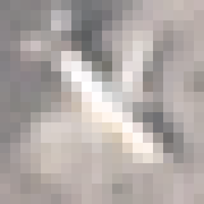


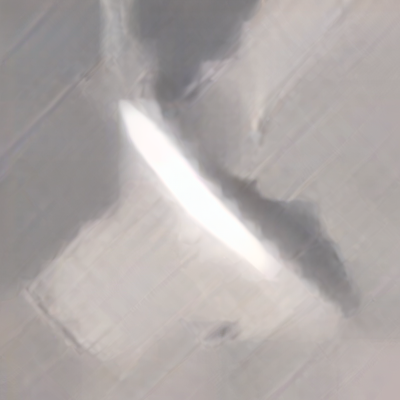
原生20×20输入 · 400×400输出原图 · 滑块比较保留相同完整视野。
原生20×20输入 → 固定20倍 → 400×400输出。每个候选都运行全部8,000张原生飞机图片，网页沿用五张固定样本。
官方适配两组虽然末期LPIPS下降，但均未通过预设保真限制，因此停止于每组10,000步，不延长到20,000步。选用第5,000步的保真候选用于比较，也不代表其保真度优于旧模型。当前保留旧模型作为对照，不自动替换。
下表同时列出边缘误差与低频误差，避免仅凭纹理指标变好就认定细节更真实。AI收益来自实拍验证集，测试分数只用于最终报告。
62对留出实拍、两种固定退化，共124次测试；按8个来源场景组等权统计。这里的分数来自配对降采样测试，原生PlanesNet没有高清真值，不能把这些分数当作其真实恢复精度。
| 模型 | 本轮训练步数 | 展示权重步数及类型 | 飞机区域PSNR ↑ | 区域SSIM ↑ | 区域LPIPS ↓ | 边缘误差 ↓ | 低频误差 ↓ |
|---|---|---|---|---|---|---|---|
| 原有模型对照 | 0 | 0 · 固定旧权重 | 21.726 | 0.4991 | 0.6099 | 0.02261 | 0.00697 |
| 重建模型 · 实拍 | 30,000 | 20,000 · 感知候选 | 22.003 | 0.5265 | 0.5751 | 0.02286 | 0.00758 |
| 重建模型 · 实拍＋AI | 30,000 | 20,000 · 感知候选 | 22.025 | 0.5253 | 0.5757 | 0.02278 | 0.00741 |
| 官方适配 · 实拍 | 10,000 | 5,000 · 保真候选 | 19.753 | 0.4295 | 0.5273 | 0.02500 | 0.02911 |
| 官方适配 · 实拍＋AI | 10,000 | 5,000 · 保真候选 | 19.750 | 0.4267 | 0.5267 | 0.02550 | 0.02906 |
感知候选需满足预设结构指标限制；没有合格感知候选时，双方使用相同的保真选模规则。入选步数可能早于末步，仍需结合完整飞机目视对比判断。


原生20×20输入 · 400×400输出原图 · 滑块比较保留相同完整视野。


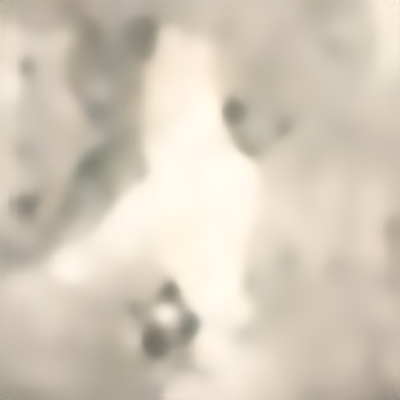
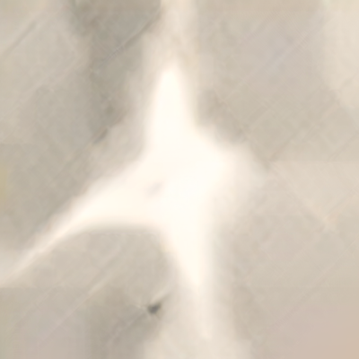
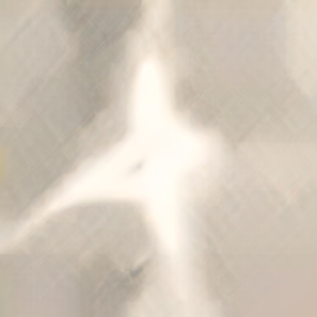
原生20×20输入 · 400×400输出原图 · 滑块比较保留相同完整视野。

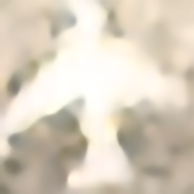


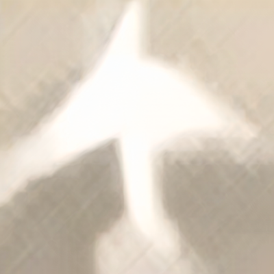
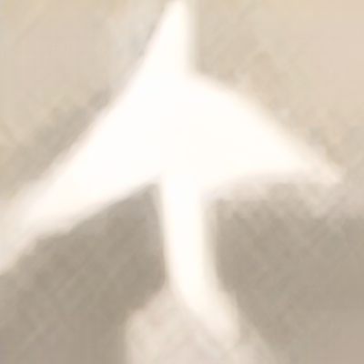
原生20×20输入 · 400×400输出原图 · 滑块比较保留相同完整视野。


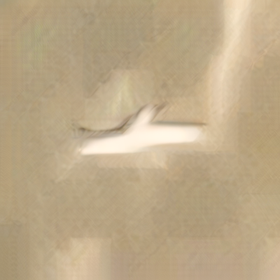
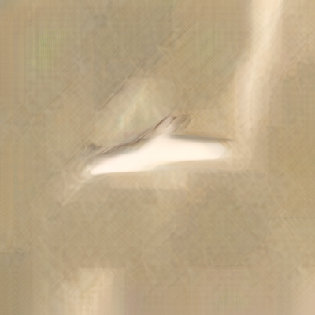
原生20×20输入 · 400×400输出原图 · 滑块比较保留相同完整视野。

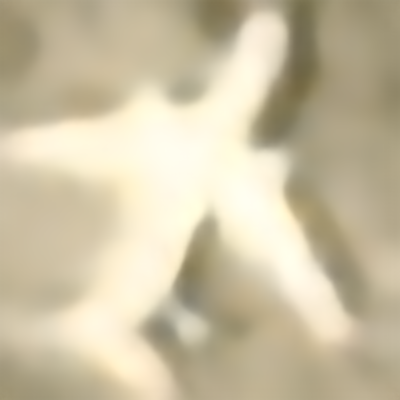


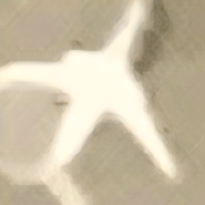
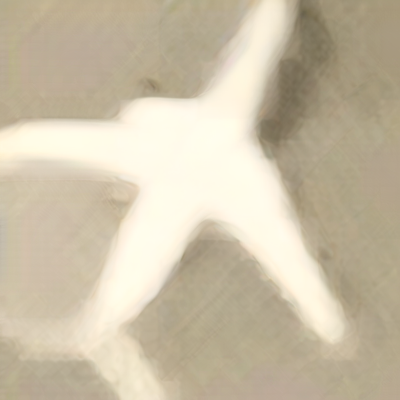
原生20×20输入 · 400×400输出原图 · 滑块比较保留相同完整视野。
重建路线约1,673万参数，基于RealESRNet预训练权重适配20倍；先20,000步重建，再10,000步加入感知损失。官方路线使用CASR与SDXL-Turbo权重，恢复完整第二阶段模块，首轮10,000步直接20倍领域适配。它改变了论文的循环推理方式，并未完整复现论文全部损失。
两条路线都比较实拍组和约10%AI混合组。本轮复用已审计的3,499对实拍训练样本及8张AI高清参考形成的64个变体，没有新增独立实拍飞机；旋转、曝光和退化变化不能计为新增独立实例。先获得高清参考，再从同一张图计算低清输入，实拍与AI来源分别留档。
每个最终候选8,000张输出均经过逐文件哈希、PNG解码、尺寸及编号完整性核验，四组共32,000张。网页五张不代表全部样本的平均观感。真实原生低清上的新增细节可能来自模型先验，不能据此确认原始机型或细节。